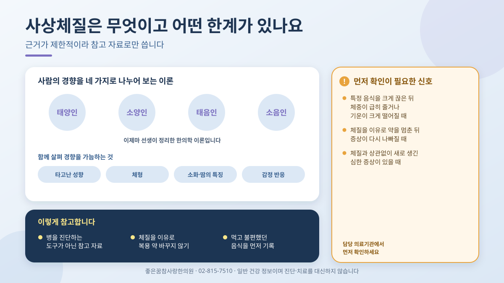

사상체질은 사람을 태양인·소양인·태음인·소음인의 네 가지 경향으로 나누어 이해하는 한방 이론이며, 과학적 근거가 제한적이라 진단이나 처방을 단정하는 기준이 아닌 참고 자료로 씁니다.
여쭙는 것
- 평소 소화는 어떤가요? 찬 음식을 먹으면 불편한가요?
- 땀은 많은 편인가요, 적은 편인가요?
- 더위와 추위 중 어느 쪽을 더 많이 타나요?
생활에서 해 볼 것
- 체질 결과보다 실제로 먹고 불편했던 음식을 기록해 보기
- 인터넷의 체질별 음식표를 그대로 따르기 전에 몸의 반응을 먼저 보기
- 체질을 이유로 복용 중인 약을 바꾸지 않기
한의원에서 함께 살필 것
- 자신의 체질이 궁금할 때 질문지와 상담으로 경향을 함께 살펴볼 수 있습니다.
- 음식이나 생활 습관에서 잘 맞는 부분을 함께 이야기할 수 있습니다.
- 한약 상담 때 체질적 경향을 참고 자료의 하나로 함께 고려합니다.
먼저 확인이 필요한 신호
- 체질 이야기를 듣고 특정 음식을 크게 끊은 뒤 체중이 급히 줄거나 기운이 크게 떨어…
- 체질을 이유로 복용 중인 약을 멈춘 뒤 증상이 다시 나빠진 경우
- 체질과 상관없이 새로 생긴 심한 증상이 있는 경우

사상체질은 이제마 선생이 정리한 한의학 이론으로, 사람의 성향과 몸의 경향을 태양인, 소양인, 태음인, 소음인의 네 가지로 나누어 이해하는 방식입니다. 생활과 음식을 이야기할 때 참고가 될 수 있지만, 현대 의학적 근거가 제한적이어서 체질 하나로 병이나 치료를 결정하지는 않습니다. "저는 무슨 체질인가요?"라는 질문에는 이 한계를 함께 말씀드립니다.
왜 체질을 이야기하나요
- 같은 증상이라도 사람마다 소화, 땀, 추위와 더위를 타는 정도가 달라 접근을 달리할 수 있다는 관점입니다.
- 타고난 성향, 체형, 소화와 땀의 특징, 감정 반응을 함께 살펴 경향을 가늠합니다.
- 음식이나 생활 습관을 이야기할 때 대화의 출발점이 되기도 합니다.
- 다만 사람이 판단하는 부분이 있어 같은 사람도 상황에 따라 다르게 보일 수 있습니다.

먼저 이렇게 여쭙니다
- 평소 소화는 어떤가요? 찬 음식을 먹으면 불편한가요?
- 땀은 많은 편인가요, 적은 편인가요?
- 더위와 추위 중 어느 쪽을 더 많이 타나요?
- 성격이나 감정 반응에서 스스로 느끼는 특징이 있나요?
- 이전에 체질 이야기를 들은 적이 있나요?
일상에서 먼저 해 볼 수 있는 것
- 체질 결과보다 실제로 먹고 불편했던 음식을 기록해 보기
- 인터넷의 체질별 음식표를 그대로 따르기 전에 몸의 반응을 먼저 보기
- 체질을 이유로 복용 중인 약을 바꾸지 않기
- 궁금한 점은 진료 때 질문으로 적어 오기

한의원에서 함께 살필 수 있는 경우
- 자신의 체질이 궁금할 때 질문지와 상담으로 경향을 함께 살펴볼 수 있습니다.
- 음식이나 생활 습관에서 잘 맞는 부분을 함께 이야기할 수 있습니다.
- 한약 상담 때 체질적 경향을 참고 자료의 하나로 함께 고려합니다.
좋은꿈참사랑한의원에서는 체질 분류보다 지금의 불편과 생활을 먼저 듣고, 진맥을 기본으로 하고 필요하다고 판단될 때 설진·복진을 더해 살핀 뒤 체질적 경향은 참고로만 더해 침이나 한약 상담 등을 정합니다.
이렇게 기록해 오시면 상담이 쉬워집니다
- 먹고 나서 불편했던 음식과 편했던 음식
- 땀, 추위와 더위, 소화에 대해 스스로 느끼는 특징
- 이전에 들은 체질 결과와 그 이유
- 복용 중인 약과 영양제

이런 증상은 먼저 확인이 필요합니다
- 체질 이야기를 듣고 특정 음식을 크게 끊은 뒤 체중이 급히 줄거나 기운이 크게 떨어진 경우
- 체질을 이유로 복용 중인 약을 멈춘 뒤 증상이 다시 나빠진 경우
- 체질과 상관없이 새로 생긴 심한 증상이 있는 경우
이런 경우에는 담당 의료기관에서 먼저 확인하세요. 체질 이야기를 이유로 복용 중인 약을 임의로 줄이거나 끊지 마시고, 특정 음식은 해롭다는 식의 단정적인 정보는 근거가 제한적일 수 있어 주의가 필요합니다.
한눈에 보는 표
| 구분 | 핵심 |
|---|---|
| 여쭙는 것 | 평소 소화는 어떤가요? 찬 음식을 먹으면 불편한가요? 땀은 많은 편인가요, 적은 편인가요? |
| 생활에서 해 볼 것 | 체질 결과보다 실제로 먹고 불편했던 음식을 기록해 보기 인터넷의 체질별 음식표를 그대로 따르기 전에 몸의 반응을 먼저 보기 |
| 한의원에서 함께 살필 것 | 자신의 체질이 궁금할 때 질문지와 상담으로 경향을 함께 살펴볼 수 있습니다. 음식이나 생활 습관에서 잘 맞는 부분을 함께 이야기할 수 있습니다. |
| 먼저 확인이 필요한 신호 | 체질 이야기를 듣고 특정 음식을 크게 끊은 뒤 체중이 급히 줄거나 기운이 크게 떨어진 경우 체질을 이유로 복용 중인 약을 멈춘 뒤 증상이 다시 나빠진 경우 |
자주 묻는 질문
체질은 한 번 정해지면 평생 같은가요?
체질을 어떻게 볼지는 관점마다 다르며, 한 번의 판단으로 정해진 것이라고 단정하지 않습니다.
체질을 알면 병을 알 수 있나요?
아닙니다. 체질은 경향을 이해하는 참고 자료이며 병을 진단하는 도구가 아닙니다.
체질 검사는 반드시 해야 하나요?
아닙니다. 원하시거나 필요하다고 판단될 때 상담으로 살펴봅니다.
이 글은 일반적인 건강 정보이며 개인의 진단이나 치료를 대신하지 않습니다. 증상이 있거나 복용 중인 약이 있다면 진료를 통해 확인하세요. 치료 효과는 개인마다 다를 수 있습니다.
작성 기준: 일반적으로 알려져 있는 건강 정보를 참고해 정리했습니다(대표원장 감수). 증상 기록은 1~2주 동안 하루 1회, 비슷한 시간에 적어 오시면 지난 상태와 비교하기 쉽습니다.
좋은꿈참사랑한의원은 재진 때 지난번 이야기부터 이어서 여쭙니다. 진료시간과 예약은 오시는 길에서 확인하세요.
어디서 상담받을 수 있나요?
좋은꿈참사랑한의원은 서울 동작구 만양로2길 2 신성빌딩 3층·5층(서울 동작구 상도동, 7호선 상도역 3번 출구 근처)에 있습니다. 한의사 3명(이종호 대표원장, 조영기 수석진료원장, 정원영 진료원장)이 진료합니다. 진료시간은 평일 09:30~20:00(점심 13:00~14:00), 토·일·공휴일 09:30~15:00이며, 방문 전 전화로 확인을 권합니다. 예약은 네이버 예약, 카카오톡 상담, 전화 02-815-7510로 받습니다.